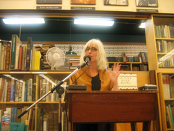

| ||||||||
|
||||||||
|
Video
This video was shot and produced by Rick Kolinsky about Willa's exhibition at the Oregon Jewish Museum entitled "The Books of Esther." It was on-view from Sept - Nov. 2012. Willa is reading "The Bells of St. Bavo Sing Scat" which appears in Storytelling in Cambodia, Calyx Books, 2006, and Alive at the Center: contemporary poems from the pacific northwest, Ooligan Press, 2013. You can also download the video here: http://threewayconversation.org/TheBellsofStBavo.m4v. This is a Youtube of the hanging of Exit, Winter: a juried show, Gallery 114, in which Willa had two color photographs and a ceramic sculpture, Jan. 2012. Willa has a poem in the recently released I Go to the Ruined Place: Contemporary Poems in Defense of Human Rights, published by Lost Horse Press. In April, at Broadway Books, she was joined by writers/activists Frances Payne Adler, Patricia Bollin, Edith Mirante, John Paisley, Kirsten Rian, and Sandy Polishuk to read from the anthology. Above is a video clip from that evening. Audio
Photos  |
{kind=link}